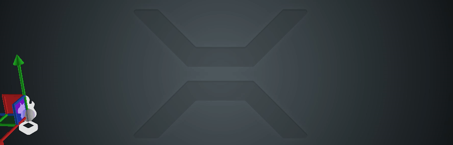

Tutorial: Lasers and lightning
Warning
Приносим свои извинения за неудобства. Для этой страницы нет перевода на русский язык. Она будет отображаться на английском языке.
Intermediate Artist Programmer
This tutorial explains how to create lasers and lightnings using particles and custom materials.
Imagine we want to create a lightning arc like this one:
This effect is a strip which:
connects two fixed points
changes positions very quickly
can be rendered as a single strip
Because the lightning is a single-line strip, we can render it using the ribbon shape builder, but with a few major differences. The particles:
spawn at the same time, rather than in sequence
appear on a single line or arc, but with semi-randomized positions to give the illusion of lightning
should reappear very quickly
Simultaneous spawning
We can create a looping Spawner by frame which spawns a certain number of particles (lets say 50) every frame.
Because we only need one set visible at a time we limit the Maxmimum Particles on the emitter to 50 and give them the same lifespan (for example 0.2 seconds).
This means the Spawner will try to emit 50 particles every frame, but because we have limited them it will only spawn 50 particles the first frame.
They all have the same lifespan, so when they die at the same time a new batch of 50 particles will be spawned.
Connect two points
We are going to use the Position (Arc) initializer. It picks a second point from another Entity and sets the particles' positions to lie on an arc between the Emitter and the target Entity.
By clicking the Ordered checkbox we can force the particles to be placed at equal distances starting from the emitter and moving towards the target Entity. This is important when we render them using a Ribbon shape builder because if they appear at random (unordered) positions along the arc it will be a mess. We also have to add Spawn Order initializer and sort the particles by Order (this is true for all ribbons, not just lightning.)
The arc position initialzier also allows for a random offset which we set to some small number.
Change positions fast
We can set the particles' lifespan to a small number (eg 0.2 seconds). With the Time scale parameter, we can additionally control the speed of the entire particle system.
To illustrate better what's going on here is the same effect with Billboard shape builder instead of Ribbon, and slowed down 30 times:

Moving lightning
There is a way to make the lightning arc move from point A to point B instead of being static.

There are a few adjustments we need to make:
Change the spawn rate to a lower one. The example above uses 600/second and is played at 0.1 time scale, which means around 1 particle per frame.
Set a fixed count on the arc positioner (50). Because it interpolates the distances based on the number of particles spawned each frame, if we spawn them sequentially they'll all stay in the beginning of the arc. By setting the count to 50 we tell the arc positioner to expect 50 particles in total.
Set a delay to the spawner to allow the old arc to completely disappear before starting again. Otherwise the Ribbon will wrongly connect the old and the new particles, as it can't know how to split them.
Lasers using particles
Creating lasers with particles is very similar to making lightning. We actually need less particles, because the lasers are straight and do not deviate. By setting the arc positioner's arc height to 0 and random offset to (0, 0, 0) we can spawn the particles in a straight line. If you want you can give them slightly different sizes to make the laser beam appear shimmering.
One thing to be mindful about lasers is that usually when the target moves you want the laser to move with it. Because the arc positioner is an initializer and not an updater, it has no effect on particles already spawned, which and stay behind. There are three ways to counter this.
Spawn the particles very fast. If they only live for 1-2 frames the laser will be recreated too fast for the user to notice any visual differences.
Spawn particles in Local space. This means they will move together with the emitter, but then you will have to rotate and scale the emitter to always point to the target Entity.
Create a custom Updater. If you create a custom post-updater similar (or simpler) to the arc positioner you can force it to update the particle positions every frame, correctly placing them between the two points even if they move.
Depending on the type of game you want to make each of these options can have benefits or drawbacks. Spawning the particles every frame is the easiest and simplest way to do it and will be sufficient for most needs.
Lasers using custom materials
Creating lasers using custom materials is similar to using particles in Local space. We need to manually rotate the scale the emitter to always face a target entity.
We can designate one axis which points towards the target to be our length, leaving the other two axes for width of the laser.
Rendering a cylinder with height of 1 which is placed under the rotated entity will cause it to stretch and reach the target point.
The custom material is required to place a scrolling texture on the cylinder. Or you can use a regular Emissive map with no scrolling in which case you won't need a custom material.
The particles sample already contains an example of how to create lasers this way. The LaserOrientationScript rotates and scales the entity towards a target point and the ComputeColorTextureScroll shader samples a scrolling texture.
Sample project
To see some of the techniques described on this page implemented in a project, create a new Sample: Particles project and open the Lasers scene.